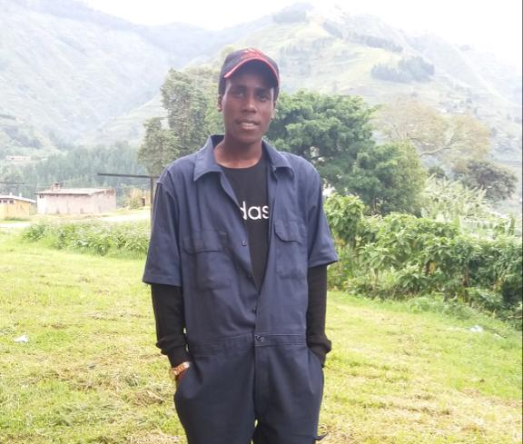

Electrical Technician and A web Developer
Passionate, performance driven electrical professional possessing a proven ability to assist with the day to day running of a power department and electrical systems. Skilled in identifying technical needs, designing of simple electrical systems both on paper and on a computer and resolving electrical related problems.
Uganda Technical College Kichwamba - (August 2018 - November 2020)
St John's Secondary School Nyabwina - (January 2016 - November 2017)
December 2020 - February 2022
March 2022 - December 2022
At UTC Kichwamba (Oct 2020-Nov 2020)